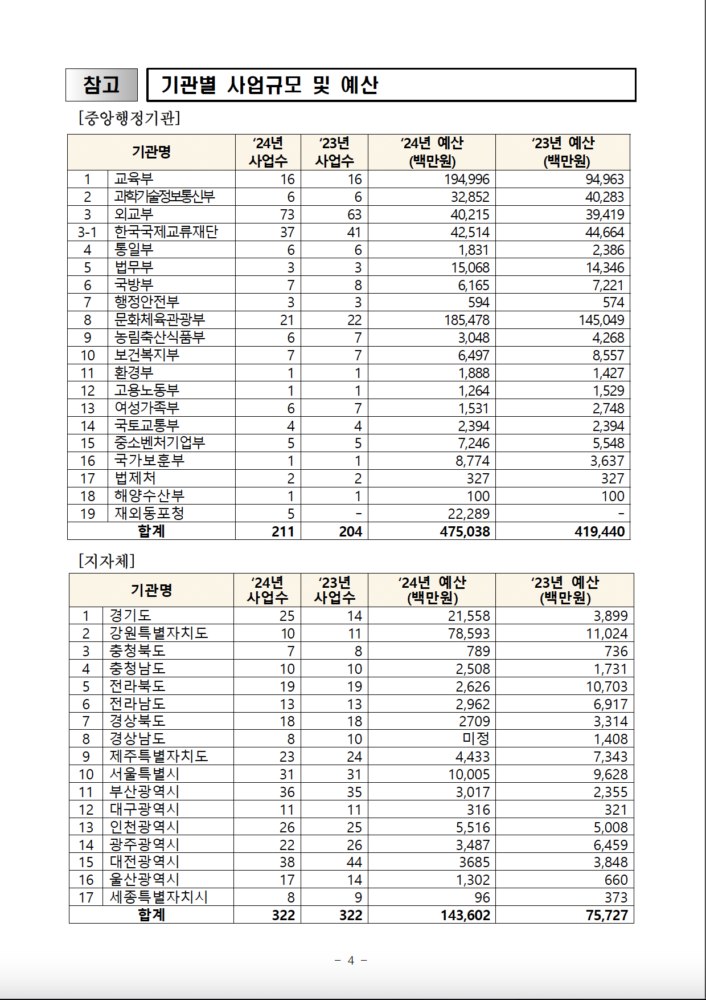
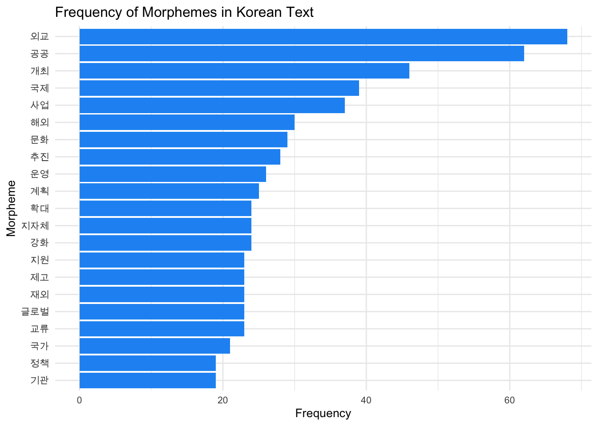
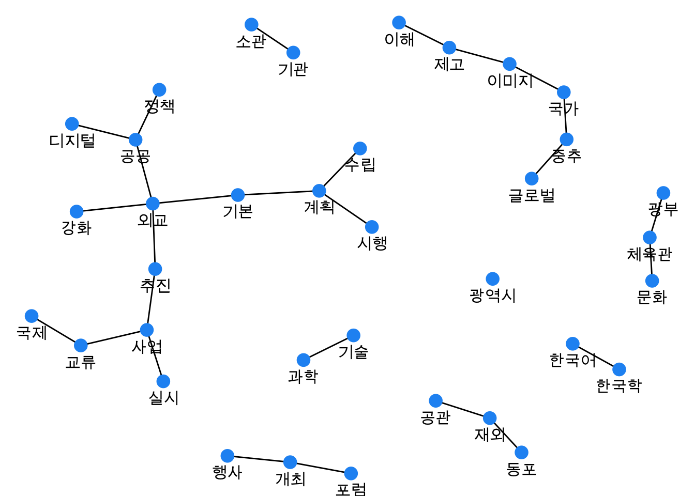

# install.packages("remotes")
# remotes::install_github("bit2r/bitNLP")
library(bitNLP)
# install_mecab_ko()
# install.packages("RcppMeCab")9 Korean Text Analysis
In this chapter, we will learn how to analyze Korean text data using R. Korea’s 2024 Public Diplomacy Comprehensive Implementation Plan (2024년 공공외교 종합시행계획 개요) as an example text.
We will learn the following things in order:
- Extracting text and tables from a PDF file.
- Extracting text and tables from the internet.
- Ensuring accurate spacing between words in Korean text.
- Analyzing morphemes in Korean text.
- Analyzing word frequency in Korean text.
- Analyzing the noun word network in Korean text.
- Analyzing the sentiment of Korean text.
- Topic modeling of Korean text.
- Korean tweet analysis.
9.1 Libraries
First, we need to install bitNLP which requires us to install the MeCab library for Korean text analysis. Uncomment the following lines in your first usage. After the first usage, you can comment out the installation lines.
Now let’s load the necessary libraries. If you are missing any of the following packages, you can install them by uncommenting the install.packages lines.
# install.packages("tidyverse")
# install.packages("pdftools")
# install.packages("rvest")
# install.packages("tidytext")
# install.packages("igraph")
# install.packages("ggraph")
# install.packages("extrafont")
# install.packages("devtools")
# devtools::install_github("koheiw/stopwords")
library(tidyverse)
library(pdftools)
library(rvest)
library(tidytext)
library(igraph)
library(ggraph)
library(extrafont)
library(stopwords)9.2 Loading pdf Data
Let’s analyze the text from Korea’s 2024 Public Diplomacy Comprehensive Implementation Plan (2024년 공공외교 종합시행계획 개요) which is available as a pdf file on the Ministry of Foreign Affairs’ (MOFA) website1.
If the pdf file is in your local directory, you can load it using the following code.
# Load PDF
pdf_path <- "data/2024공공외교.pdf"Alternatively, you can download the pdf file from the MOFA’s website using the download.file function. You can then load the pdf file using the pdf_path variable. Working with the online pdf file and the local pdf file is the same. We can do either. For now, I will use the local pdf file since the MOFA might change the url for the pdf later. That is why I commented the download code. You can comment the earlier code for the local pdf file and uncomment the following code for the online pdf file.
# Download PDF
#file <- tempfile()
# This url works for now. But MOFA might change it later. You can replace the link with any other link you want to download.
#url <- "https://www.mofa.go.kr/cntntsDown.do?path=www&physic=2024%EB%85%84%EB%8F%84_%EA%B3%B5%EA%B3%B5%EC%99%B8%EA%B5%90_%EC%A2%85%ED%95%A9%EC%8B%9C%ED%96%89%EA%B3%84%ED%9A%8D.pdf&real=2024%EB%85%84%EB%8F%84_%EA%B3%B5%EA%B3%B5%EC%99%B8%EA%B5%90_%EC%A2%85%ED%95%A9%EC%8B%9C%ED%96%89%EA%B3%84%ED%9A%8D.pdf"
# download.file(url, pdf_path, headers = c("User-Agent" = "My Custom User Agent"))Now let’s extract the text from the pdf file using the pdf_text function from the pdftools package.
# Extract text
pdf_text_all <- pdf_text(pdf_path)Now, pdf_text_all is a list of character vectors, where each element corresponds to a page in the pdf file. For example, we can look at the 4th page of the pdf file in the following way.
# Let's look at the 4th page
pdf_text_all[4][1] "참고 기관별 사업규모 및 예산\n[중앙행정기관]\n ‘24년 ‘23년 ‘24년 예산 ‘23년 예산\n 기관명\n 사업수 사업수 (백만원) (백만원)\n 1 교육부 16 16 194,996 94,963\n 2 과학기술정보통신부 6 6 32,852 40,283\n 3 외교부 73 63 40,215 39,419\n3-1 한국국제교류재단 37 41 42,514 44,664\n 4 통일부 6 6 1,831 2,386\n 5 법무부 3 3 15,068 14,346\n 6 국방부 7 8 6,165 7,221\n 7 행정안전부 3 3 594 574\n 8 문화체육관광부 21 22 185,478 145,049\n 9 농림축산식품부 6 7 3,048 4,268\n10 보건복지부 7 7 6,497 8,557\n11 환경부 1 1 1,888 1,427\n12 고용노동부 1 1 1,264 1,529\n13 여성가족부 6 7 1,531 2,748\n14 국토교통부 4 4 2,394 2,394\n15 중소벤처기업부 5 5 7,246 5,548\n16 국가보훈부 1 1 8,774 3,637\n17 법제처 2 2 327 327\n18 해양수산부 1 1 100 100\n19 재외동포청 5 - 22,289 -\n 합계 211 204 475,038 419,440\n\n[지자체]\n ‘24년 ‘23년 ‘24년 예산 ‘23년 예산\n 기관명\n 사업수 사업수 (백만원) (백만원)\n 1 경기도 25 14 21,558 3,899\n 2 강원특별자치도 10 11 78,593 11,024\n 3 충청북도 7 8 789 736\n 4 충청남도 10 10 2,508 1,731\n 5 전라북도 19 19 2,626 10,703\n 6 전라남도 13 13 2,962 6,917\n 7 경상북도 18 18 2709 3,314\n 8 경상남도 8 10 미정 1,408\n 9 제주특별자치도 23 24 4,433 7,343\n10 서울특별시 31 31 10,005 9,628\n11 부산광역시 36 35 3,017 2,355\n12 대구광역시 11 11 316 321\n13 인천광역시 26 25 5,516 5,008\n14 광주광역시 22 26 3,487 6,459\n15 대전광역시 38 44 3685 3,848\n16 울산광역시 17 14 1,302 660\n17 세종특별자치시 8 9 96 373\n 합계 322 322 143,602 75,727\n\n\n - 4 -\n"You can see that there are \n characters, which refers to newline (new line) in the text. Let’s split the text by the newline character and look at the first 10 lines of the 4th page. We can split the text into lines by using the str_split function from the stringr package, which is part of tidyverse. So, we do not need to load it separately. Let’s look at the first six lines of the 4th page.
# Look at the first 10 lines of the 4th page
pdf_text_all[4] |>
# Split by newline character.
str_split("\n") |>
# Unlist
unlist() |>
# Take the first 10 lines
head(10) [1] "참고 기관별 사업규모 및 예산"
[2] "[중앙행정기관]"
[3] " ‘24년 ‘23년 ‘24년 예산 ‘23년 예산"
[4] " 기관명"
[5] " 사업수 사업수 (백만원) (백만원)"
[6] " 1 교육부 16 16 194,996 94,963"
[7] " 2 과학기술정보통신부 6 6 32,852 40,283"
[8] " 3 외교부 73 63 40,215 39,419"
[9] "3-1 한국국제교류재단 37 41 42,514 44,664"
[10] " 4 통일부 6 6 1,831 2,386" The 4th page in the pdf file looks like this:

9.3 pdf Table Extraction
Let’s try to extract the second table on page 4 of the pdf file. The table has the number of public diplomacy projects and budgets for first-tier local administration unit (hereafter, province_city for short) in Korea. We will unlist each line as we did earlier so that we can see the table in a more readable way.
First, let’s look at the 29th and 30th lines for the column names in the pdf file.
lines_pdf_4[29:30][1] " ‘24년 ‘23년 ‘24년 예산 ‘23년 예산"
[2] " 기관명" The column names are the line number, province or city’s name, project numbers for 2024 and 2023 respectively, and the budget for 2024 and 2023 in million Korean Won respectively. Let’s use the following English column names that correspond to the Korean column names in the pdf file.
# Column names
col_names <- c("no", "province_city", "project_no_2024", "project_no_2023", "budget_2024", "budget_2023")By observing the lines_pdf_4 object using view(lines_pdf_4), we can see that the second table starts from the 32nd line and ends on the 48th. We will extract only those lines. We will use str_trim “removes whitespace from start and end of string”. We will also use str_replace_all to remove commas from each line to convert entries into numbers. We will then split each line based on two or more consecutive spaces (our string is “\s{2,}”) using str_split and simplify the result into a matrix. We will convert this matrix into a data frame with non-factor columns using data.frame(stringsAsFactors = FALSE). We will set the column names of the data frame using the col_names vector that we created above. These explanations are also available in each step in the following code chunk.
# Select lines 32 to 48 from the lines_pdf_4 data frame
province_city_pd <- lines_pdf_4[32:48] |>
# Trim whitespace from both ends of each element in the selected rows
str_trim() |>
# Replace all commas with an empty string in each element
str_replace_all(",", "") |>
# Split each element based on 2 or more consecutive spaces and simplify into a matrix
str_split("\\s{2,}", simplify = TRUE) |>
# Convert the matrix into a data frame with non-factor columns
data.frame(stringsAsFactors = FALSE) |>
# Set column names for the data frame using the provided 'col_names' vector
setNames(col_names)Let’s rearrange the table (which is originally in alphabetical order) by descending order based on public diplomacy budgets in 2024.
no province_city project_no_2024 project_no_2023 budget_2024 budget_2023
1 8 경상남도 8 10 미정 1408
2 17 세종특별자치시 8 9 96 373
3 3 충청북도 7 8 789 736
4 2 강원특별자치도 10 11 78593 11024
5 13 인천광역시 26 25 5516 5008
6 9 제주특별자치도 23 24 4433 7343
7 15 대전광역시 38 44 3685 3848
8 14 광주광역시 22 26 3487 6459
9 12 대구광역시 11 11 316 321
10 11 부산광역시 36 35 3017 2355
11 6 전라남도 13 13 2962 6917
12 7 경상북도 18 18 2709 3314
13 5 전라북도 19 19 2626 10703
14 4 충청남도 10 10 2508 1731
15 1 경기도 25 14 21558 3899
16 16 울산광역시 17 14 1302 660
17 10 서울특별시 31 31 10005 9628But these province_city names are in Korean since the document was in Korean. Let’s practice extracting a table from internet then to find English names for these Korean provinces or cities. As of May 6, 2024, Wikipedia’s list of South Korea’s administrative divisions seems to be correct. Let’s extract the table there.
9.4 html Table Extraction
We will use the rvest package to extract the table from the Wikipedia page. We will use the read_html function to read the html content of the Wikipedia page. We will then use the html_node function to select the table we want to extract. You can refer to rvest package for more information on how to extract what you want. We can use the xpath of the table we want to extract. You can find the xpath of the table by right-clicking on the table on the Wikipedia page and selecting “Inspect” or “Inspect Element” depending on your browser. You can then right-click on the highlighted html element in the “Elements” tab of the “Developer Tools” and select “Copy” -> “Copy XPath”. The xpath of the table we want to extract is //*[@id="mw-content-text"]/div[1]/table[5]. We will use the html_table function to extract the table as a data frame. We will use the fill = TRUE argument to fill in the missing values in the table.
html <- read_html("https://en.wikipedia.org/wiki/Administrative_divisions_of_South_Korea")
table <- html |>
html_node(xpath = '//*[@id="mw-content-text"]/div[1]/table[5]') |>
html_table(fill = TRUE)Let’s look at the first 10 rows of the table.
head(table)# A tibble: 6 × 9
Code Emblem Name Official English nam…¹ Hangul Hanja Population 2020 Cens…²
<chr> <lgl> <chr> <chr> <chr> <chr> <chr>
1 KR-11 NA Seoul… Seoul 서울… .mw-… 9,586,195
2 KR-26 NA Busan… Busan 부산… 釜山… 3,349,016
3 KR-27 NA Daegu… Daegu 대구… 大邱… 2,410,700
4 KR-28 NA Inche… Incheon 인천… 仁川… 2,945,454
5 KR-29 NA Gwang… Gwangju 광주… 光州… 1,477,573
6 KR-30 NA Daeje… Daejeon 대전… 大田… 1,488,435
# ℹ abbreviated names: ¹`Official English name[5]`, ²`Population 2020 Census`
# ℹ 2 more variables: `Area (km2)` <chr>,
# `Population density 2022 (per km2)` <chr>Perfect! Now, let’s keep only the columns that we will need.
Let’s hope that the Korean names in the Wikipedia table and the MOFA’s pdf file are the same. Let’s merge the two tables based on the Korean names.
Let’s see if we have any missing values in the English names.
# Check for missing values in the English names
province_city_pd_joined |>
filter(is.na(province_city_eng)) no province_city project_no_2024 project_no_2023 budget_2024 budget_2023
1 5 전라북도 19 19 2626 10703
province_city_eng
1 <NA>We almost got it! The only difference is 전라북도 (North Jeolla Province) in the MOFA’s pdf file which is written as 전북특별자치도 (Jeonbuk State) in the Wikipedia table. Let’s fix this.
# Move the English name column next to the Korean name column, and remove the 'no' column
province_city_pd_joined <- province_city_pd_joined |>
select(province_city, province_city_eng, everything(), -no)
# Fix the English name of 전라북도
province_city_pd_joined <- province_city_pd_joined |>
mutate(province_city_eng = ifelse(province_city == "전라북도", "North Jeolla province_city", province_city_eng))9.5 Text Analysis
9.5.1 Word Frequency
This time let’s look at all of the text in the 2024 Public Diplomacy Comprehensive Implementation Plan. We will combine all the text into a single character vector.
# Combine text
pdf_text <- str_c(pdf_text_all, collapse = " ")We will now split the text into words using the str_split function from the stringr package. We will then convert the result into a data frame with non-factor columns using the data.frame(stringsAsFactors = FALSE) function. We will set the column name of the data frame as word.
# Split the text into words
words <- pdf_text |>
# Split the text into words
str_split("\\s+") |>
# Convert the result into a data frame with non-factor columns
data.frame(stringsAsFactors = FALSE) |>
# Set the column name of the data frame as "word"
setNames("word")Let’s look at the first 10 rows of the data frame.
head(words, 10) word
1
2 2024년
3 공공외교
4 종합시행계획
5 개요
6
7 수립
8 근거
9 ❑
10 공공외교법Now, let’s count the frequency of each word in the text using the count function from the dplyr package package. We will then arrange the result in descending order based on the frequency of the words.
# Count the frequency of each word
word_freq <- words |>
count(word, sort = TRUE)Let’s look at the first 10 rows of the data frame
head(word_freq, 10) word n
1 및 72
2 - 55
3 공공외교 40
4 등 33
5 ㅇ 28
6 개최, 22
7 통한 22
8 사업 18
9 제고 18
10 강화 17This is not very useful. There are two main issues with Korean text. First, Korean text does not have consistent spacing between words. Second, Korean text has particles and other morphemes that are not words. We will address these issues now.
9.5.2 Spacing in Korean Text
Let’s get the spacing right in Korean text using the bitNLP package’s get_spacing function, which will add spaces between words in the Korean text. So, for example “한국공공외교” will become “한국 공공 외교”.
# Get the spacing right in Korean text
pdf_text_ko <- get_spacing(pdf_text)Now, let’s split the text into words again using the str_split function from the stringr package.
# Split the text into words
words_ko <- pdf_text_ko |>
# Split the text into words
str_split("\\s+") |>
# Convert the result into a data frame with non-factor columns
data.frame(stringsAsFactors = FALSE) |>
# Set the column name of the data frame as "word"
setNames("word")Let’s analyze the word frequency in the text again.
# Count the frequency of each word
word_freq_ko <- words_ko |>
count(word, sort = TRUE)
head(word_freq_ko, 10) word n
1 ▴ 175
2 ( 97
3 - 80
4 및 73
5 외교 67
6 공공 62
7 국제 36
8 사업 35
9 등 33
10 해외 30We have many special characters in the text. Let’s remove all characters except for Korean characters, spaces, English letters, and numbers using the str_replace_all function from the stringr package.
# Remove all characters except for Korean characters, spaces, English letters, and numbers
word_freq_ko <- pdf_text_ko |>
# Remove all characters except Korean characters, English letters, numbers, and spaces
str_replace_all("[^가-힣a-zA-Z0-9\\s]", "") |>
# Split the cleaned text into words based on one or more spaces
str_split("\\s+") |>
# Convert the list result into a data frame with non-factor columns
data.frame(stringsAsFactors = FALSE) |>
# Set the column name of the data frame as "word"
setNames("word")Let’s analyze the word frequency in the text again.
# Count the frequency of each word
word_freq_ko <- word_freq_ko |>
count(word, sort = TRUE)
head(word_freq_ko, 10) word n
1 및 73
2 외교 67
3 공공 62
4 개최 44
5 사업 37
6 국제 36
7 등 35
8 해외 30
9 문화 29
10 추진 28This is much better! We have removed the special characters and have more meaningful words in the text.
We can also remove some common stopwords in Korean using the stopwords function in stopwords package along with the stopwords-iso library that has Korean stopwords.
stopwords <- stopwords("ko", source = "stopwords-iso") |>
as.data.frame() |>
setNames("word")
# Remove stopwords
word_freq_ko <- word_freq_ko |>
# anti_join (remove) stopwords
anti_join(stopwords, by = "word")Let’s count the frequency of each word in the text again.
head(word_freq_ko, 10) word n
1 외교 67
2 공공 62
3 개최 44
4 사업 37
5 국제 36
6 해외 30
7 문화 29
8 추진 28
9 운영 25
10 강화 24This way, we removed words such as 및 (and) and 등 (etc.) from the text.
Let’s move on to morpheme analysis which makes more sense in Korean text analysis context.
9.5.3 Morpheme Analysis in Korean Text
Let’s analyze the morphemes in the Korean text using the morpho_mecab function from the bitNLP package, which will extract morphemes from the Korean text.
# Analyze the morphemes in the Korean text
morphemes <- morpho_mecab(pdf_text_ko)This creates a list of character vectors, where each element corresponds to a morpheme in the text. We can also combine all of the morphemes and tokenize them into a single character vector.
# Combine all the morphemes into a single character vector
morphemes_single <- morpho_mecab(pdf_text_ko, indiv = FALSE)Now, let’s split the text into words again this time by converting morphemes_single into a data frame using the as.data.frame function. We will set the column name of the data frame as “word”.
# Split the text into words
words_morphemes <- morphemes_single |>
as.data.frame() |>
# Set the column name of the data frame as "word"
setNames("word")We will now count the frequency of each morpheme in the text using the count function from the dplyr package package. We will then arrange the result in descending order based on the frequency of the morphemes.
# Count the frequency of each morpheme
morpheme_freq <- words_morphemes |>
count(word, sort = TRUE)
head(morpheme_freq, 10) word n
1 외교 68
2 공공 62
3 개최 46
4 국제 39
5 사업 37
6 해외 30
7 문화 29
8 추진 28
9 운영 26
10 계획 25Now, this is more like it!
Let’s visualize the frequency of the morphemes in the text using a bar plot. Before that let’s address the font issue with Korean text in the plot.
Korean text sometimes is not visible in the graph due to the font issue. This was the case in my Macbook. Let’s set the font to one that supports Korean characters. We will use the extrafont package to set the font to one that supports Korean characters. We will use the font_import function to import the fonts from the system. This may take some time. You only need to do it once. That’s why I commented it. You can uncomment it in first usage.
# Load extrafont and register fonts
#font_import() # This might take a while if it's the first time you're running itWe will then use the loadfonts function to load the fonts. We will use the fonts function to display the available fonts and find one that supports Korean characters. We will set the font to one that supports Korean characters. For now, I have chosen “Arial Unicode MS” as the Korean font. You can replace it with a font from your system that supports Korean characters if necessary.
#loadfonts(device = "all")
# Display available fonts, find one that supports Korean
#fonts()
# Set the font to one that supports Korean characters
korean_font <- "Arial Unicode MS" # Replace with a font from your system that supports Korean if necessaryWe will use the ggplot function from the ggplot2 package to create the plot. We will use the geom_col function to add the bars to the plot. We will use the theme_minimal function to set the theme of the plot to minimal. We will use the theme function to adjust the font size in the plot. We will set the font size to 10. We will use the labs function to add the title and labels to the plot. We will visualize only the most frequent 20 morphemes in the text.
# Visualize the frequency of the morphemes in the text
morpheme_freq |>
top_n(20) |>
mutate(word = reorder(word, n)) |> ggplot(aes(word, n)) +
geom_col(fill = "#2196f3") +
coord_flip() +
theme_minimal() +
# use Korean font
theme(text = element_text(family = korean_font, size = 10)) +
labs(title = "Frequency of Morphemes in Korean Text", x = "Morpheme", y = "Frequency")
9.5.4 Word Network in Korean Text
Let’s analyze the word network in the Korean text using the tokenize_noun_ngrams function from the bitNLP package which builds on tidytext package. We will use the tokenize_noun_grams function to extract the noun word network from the Korean text.
# We can use a user-defined dictionary to improve the accuracy of the tokenization. We will rely on the one provided by the `bitNLP` package.
dic_path <- system.file("dic", package = "bitNLP")
dic_file <- glue::glue("{dic_path}/buzz_dic.dic")
word_network <- tokenize_noun_ngrams(pdf_text_ko, simplify = TRUE, user_dic = dic_file, n = 2) |>
as.data.frame() |>
setNames("paired_words")Now, let’s separate the paired words into two columns using the separate function from the tidyr package which is loaded as part of the tidyverse package. This will allow us to create bigrams from the paired words.
We will now count the frequency of each bigram in the text using the count function from the dplyr package package, which is also party of the tidyverse. We will then arrange the result in descending order based on the frequency of the bigrams.
# new bigram counts:
word_network_counts <- word_network_separated |>
count(word1, word2, sort = TRUE)We will now create a graph from the bigram counts using the graph_from_data_frame function from the igraph package. We will use the ggraph function from the ggraph package to create the graph. We will use the geom_edge_link function to add the edges to the graph. We will use the geom_node_point function to add the nodes to the graph. We will use the geom_node_text function to add the labels to the nodes in the graph. We will set the font to the Korean font that we set earlier. We will then adjust the font in the graph. Here, n >= 6 is used to filter out bigrams that appear less than 6 times. You can adjust this number as needed. You can check out ggraph layout options here.
word_network_select <- word_network_counts |>
filter(n >= 6) |>
graph_from_data_frame() |>
ggraph(layout = "fr") +
geom_edge_link(aes()) +
geom_node_point(color = "#2196f3", size = 4) +
geom_node_text(aes(label = name), family = korean_font, vjust = 2, size = 4) + # Set family to Korean font
theme_void()
word_network_select
9.5.5 Sentiment Analysis
9.5.6 Topic Modeling
9.6 Korean Tweet Analysis
9.7 Further Readings
9.8 References
9.9 Session Info
R version 4.4.0 (2024-04-24)
Platform: aarch64-apple-darwin20
Running under: macOS Sonoma 14.4.1
Matrix products: default
BLAS: /Library/Frameworks/R.framework/Versions/4.4-arm64/Resources/lib/libRblas.0.dylib
LAPACK: /Library/Frameworks/R.framework/Versions/4.4-arm64/Resources/lib/libRlapack.dylib; LAPACK version 3.12.0
locale:
[1] en_US.UTF-8/en_US.UTF-8/en_US.UTF-8/C/en_US.UTF-8/en_US.UTF-8
time zone: Asia/Seoul
tzcode source: internal
attached base packages:
[1] stats graphics grDevices utils datasets methods base
other attached packages:
[1] stopwords_2.3 extrafont_0.19 ggraph_2.2.1 igraph_2.0.3
[5] tidytext_0.4.2 rvest_1.0.4 pdftools_3.4.0 lubridate_1.9.3
[9] forcats_1.0.0 stringr_1.5.1 dplyr_1.1.4 purrr_1.0.2
[13] readr_2.1.5 tidyr_1.3.1 tibble_3.2.1 ggplot2_3.5.1
[17] tidyverse_2.0.0 bitNLP_1.4.3.9000
loaded via a namespace (and not attached):
[1] tidyselect_1.2.1 viridisLite_0.4.2 farver_2.1.1
[4] viridis_0.6.5 fastmap_1.1.1 tweenr_2.0.3
[7] janeaustenr_1.0.0 promises_1.3.0 shinyjs_2.1.0
[10] digest_0.6.35 timechange_0.3.0 mime_0.12
[13] lifecycle_1.0.4 qpdf_1.3.3 tokenizers_0.3.0
[16] magrittr_2.0.3 compiler_4.4.0 rlang_1.1.3
[19] sass_0.4.9 tools_4.4.0 utf8_1.2.4
[22] knitr_1.46 labeling_0.4.3 askpass_1.2.0
[25] graphlayouts_1.1.1 htmlwidgets_1.6.4 curl_5.2.1
[28] xml2_1.3.6 miniUI_0.1.1.1 ngram_3.2.3
[31] withr_3.0.0 grid_4.4.0 polyclip_1.10-6
[34] fansi_1.0.6 xtable_1.8-4 colorspace_2.1-0
[37] extrafontdb_1.0 scales_1.3.0 MASS_7.3-60.2
[40] cli_3.6.2 rmarkdown_2.26 generics_0.1.3
[43] RcppParallel_5.1.7 rstudioapi_0.16.0 httr_1.4.7
[46] tzdb_0.4.0 cachem_1.0.8 ggforce_0.4.2
[49] RcppMeCab_0.0.1.2 parallel_4.4.0 rhandsontable_0.3.8
[52] vctrs_0.6.5 Matrix_1.7-0 jsonlite_1.8.8
[55] hms_1.1.3 ggrepel_0.9.5 jquerylib_0.1.4
[58] shinyBS_0.61.1 glue_1.7.0 stringi_1.8.3
[61] gtable_0.3.5 later_1.3.2 munsell_0.5.1
[64] pillar_1.9.0 htmltools_0.5.8.1 R6_2.5.1
[67] tidygraph_1.3.1 evaluate_0.23 shiny_1.8.1.1
[70] lattice_0.22-6 SnowballC_0.7.1 memoise_2.0.1
[73] DataEditR_0.1.5 httpuv_1.6.15 bslib_0.7.0
[76] Rcpp_1.0.12 Rttf2pt1_1.3.12 gridExtra_2.3
[79] xfun_0.43 pkgconfig_2.0.3 Please bear in mind that MOFA website’s url might change later, making this hyperlink broken. In that case, you can download the pdf file on the MOFA’s website by searching for “2024년 공공외교 종합시행계획 개요”.↩︎